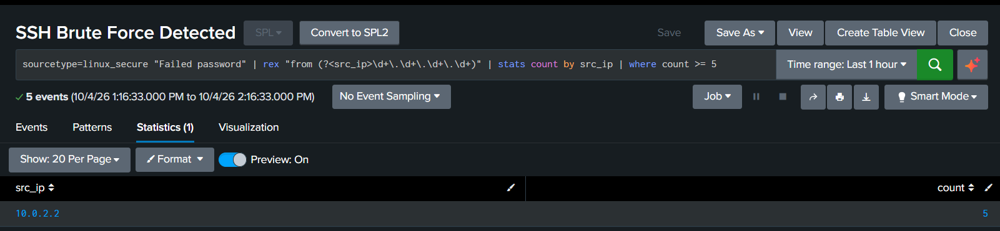

Building a Home SOC Lab and Detecting SSH Brute Force with Splunk
Summary. I built a small security lab on my laptop: a Linux server running Splunk, the log-analysis tool used in many security operations centres (SOCs). I fed it the server's login logs, attacked the server with repeated wrong passwords, and wrote a Splunk search that detects the attack.
The search correctly flagged the attacking IP after 5 failed logins in 19 seconds. I then saved it as a scheduled alert so the server is checked automatically every hour.
Attack technique: password guessing (MITRE ATT&CK T1110.001).
1. Lab setup
| Part | What I used | Why |
|---|---|---|
| Virtual machine | VirtualBox, 2 CPUs, 4 GB RAM, 60 GB disk | Keeps the lab isolated from my real laptop |
| Server | Ubuntu Server 26.04 LTS (host name siem) | Linux is what most servers run |
| SIEM | Splunk Enterprise 10.6 | Collects and searches logs; widely used in SOCs |
| Remote access | SSH, port-forwarded from my laptop (port 2222 → 22) | The service I attacked and defended |
| Log source | /var/log/auth.log | Linux records every login and admin command here |
Getting logs into Splunk
Log files on Linux are private by default, so I gave Splunk read access through the adm group, then told it to watch the login log:
sudo usermod -aG adm splunk
sudo -u splunk /opt/splunk/bin/splunk restart
sudo -u splunk /opt/splunk/bin/splunk add monitor /var/log/auth.log -sourcetype linux_secureWithin seconds Splunk showed 108 events, including my own SSH login (Accepted password for medha from 10.0.2.2) and every admin command I had run. This already shows who did what, when, and from where.
2. The attack
From a second terminal on my laptop, I tried to log in five times as a user that does not exist, with a wrong password each time:
ssh -p 2222 hacker@127.0.0.1This simulates the most common attack against internet-facing servers: bots guessing usernames and passwords until one works.
3. Finding it in Splunk
Step 1: look at the raw events
sourcetype=linux_secure "Failed password"Splunk returned exactly 5 events:
14:13:47 Failed password for invalid user hacker from 10.0.2.2 port 52292 ssh2
14:13:51 Failed password for invalid user hacker from 10.0.2.2 port 52292 ssh2
14:13:55 Failed password for invalid user hacker from 10.0.2.2 port 52292 ssh2
14:14:02 Failed password for invalid user hacker from 10.0.2.2 port 52294 ssh2
14:14:06 Failed password for invalid user hacker from 10.0.2.2 port 52294 ssh2Three things make this suspicious:
- "invalid user": the username doesn't exist. Real users know their own username; attackers guess common ones.
- Speed: 5 attempts in 19 seconds. A person who forgot their password doesn't type that fast or that often.
- Same source: every attempt came from one IP address,
10.0.2.2(my laptop, as seen from inside the VM).
Step 2: turn it into a detection rule
sourcetype=linux_secure "Failed password"
| rex "from (?<src_ip>\d+\.\d+\.\d+\.\d+)"
| stats count by src_ip
| where count >= 5| Line | What it does |
|---|---|
"Failed password" | Finds every failed login |
rex ... | Pulls the attacker's IP address out of each log line |
stats count by src_ip | Counts failures per IP address |
where count >= 5 | Only keeps IPs with 5 or more failures |

Step 3: make it automatic
I saved the search as a Splunk alert called SSH Brute Force Detected. It runs every hour over the last hour of logs and raises a high-severity alert whenever any IP reaches 5 failures. An analyst no longer has to search manually; Splunk tells them.
4. If this were real: response
- Check for success: search for
Accepted passwordfrom the same IP. If any login succeeded, treat the server as compromised. - Block: block the IP at the firewall.
- Harden SSH: turn off password logins and use SSH keys instead, so guessing passwords is useless.
- Automate: add a tool like fail2ban that blocks an IP automatically after repeated failures.
5. Problems I hit and how I solved them
- VM kept freezing with "soft lockup" errors. Cause: the laptop going to sleep, and Windows' Hyper-V running VirtualBox in a slower mode. Fix: disabled sleep while the lab runs.
- No copy-paste in the VM console. Fix: installed an SSH server and controlled the VM from Windows PowerShell instead.
- SSH warned "REMOTE HOST IDENTIFICATION HAS CHANGED". I had rebuilt the VM, so it had a new identity key at the same address. This is the warning SSH uses to detect man-in-the-middle attacks. Since I knew the cause, I removed the old key with
ssh-keygen -R. - Splunk couldn't read the log file. Fix: added the Splunk user to the
admgroup, following least privilege rather than running Splunk as root.
6. What I'd improve next
- Add a time window: count failures per 5 minutes, so a user who mistypes a few times over a week isn't flagged.
- Catch password spraying: one IP trying many different usernames once each, which this rule would miss.
- Add a Windows machine with Sysmon logging and an attacker VM, to detect attacks on Windows as well.
7. What I learned
- A SIEM is only as good as the logs going into it. Getting the right file, with the right permissions, was half the work.
- A good detection is specific: it uses several signals together (failed login, invalid user, speed, same source) rather than one.
- Attacking my own system first, then detecting it, is the fastest way to understand what an attack actually looks like in logs.